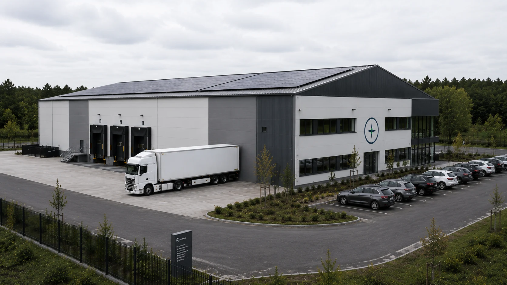
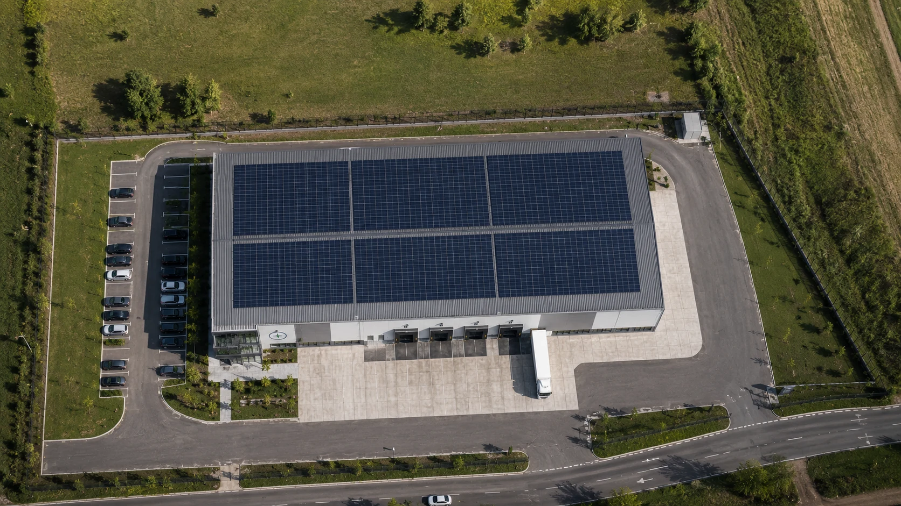

Bavaria AeroTech Green Hub
Projektentwicklung
Eine Plattform für Produktion, Technologie und Kooperation
Der Bavaria AeroTech Green Hub ist als gemeinsamer Standort für hydroponische Produktion, Agrartechnologie, Pilotierung, Entwicklung und regionale Kooperation konzipiert.

Projektvision
Räumliches Konzept für die nächste Entwicklungsstufe
Der Green Hub verbindet die zentralen Arbeitsfelder von Bavaria AeroTech in einer gemeinsamen Infrastruktur: hydroponische Produktion, Agrardrohnen, technische Entwicklung, Pilotierung, Logistik und Kooperation.
- hydroponische Produktion
- Agrartechnologie
- technische Entwicklung
- Logistik
- partnerschaftliche Zusammenarbeit
Infrastrukturkonzept
Nachhaltige Infrastruktur als Projektziel
Die Planung des Green Hub berücksichtigt Energie-, Ressourcen- und Infrastrukturkonzepte für die vorgesehenen Ausbaustufen.
CO₂-neutrale Infrastruktur
Energieautarke Versorgung
Regenerative Energiequellen
Geschlossene Ressourcenkreisläufe
- EnergieNachhaltige Energie- und Infrastrukturkonzepte
- VersorgungEnergieautarkie ist vorgesehen
- RessourcenKreisläufe als Planungsansatz
- UmsetzungAbhängig von Finanzierung und Pilotvalidierung

Räumliche Perspektive
Räumliches Konzept des Green Hub
Die Visualisierung zeigt eine mögliche räumliche Organisation der Produktions-, Entwicklungs-, Logistik- und Kooperationsbereiche.
Entwicklungsbereiche
Sechs Entwicklungsbereiche des Green Hub
Die sechs Bereiche bilden gemeinsam die funktionale Grundlage für die weitere Standort- und Infrastrukturentwicklung.
- 01
Projektvision
Zielbild und Funktion des Green Hub als Plattform für Produktion, Technologieentwicklung und Kooperation definieren.
- 02
Standortentwicklung
Flächenbedarf, Erschließung, Versorgung, Logistik und betriebliche Standortanforderungen systematisch zusammenführen.
- 03
Technische Planung
Produktions-, Energie-, Daten- und Logistiksysteme zu einem integrierten technischen Gesamtkonzept verbinden.
- 04
Pilotintegration
Validierte Erkenntnisse aus Hydroponik- und Agrardrohnen-Pilotvorhaben in die Standort- und Infrastrukturplanung übertragen.
- 05
Partnerschaften
Kooperationen mit Landwirtschaft, Forschung, Technologiepartnern, öffentlichen Stellen und regionalen Akteuren strukturieren.
- 06
Skalierung
Modulare Ausbaustufen auf Grundlage technischer, wirtschaftlicher und betrieblicher Pilotdaten entwickeln.
Aktueller Entwicklungsstand
Projektentwicklung in mehreren Arbeitssträngen
Die laufende Projektarbeit umfasst Standortanforderungen, Funktionsplanung, Pilotintegration, Kooperationen und Finanzierungsstruktur. Die Umsetzung erfolgt schrittweise auf Grundlage der Pilotvalidierung sowie der Standort-, Finanzierungs- und Genehmigungsplanung.
- Standortentwicklung
- Finanzierung
- Kommunale Abstimmung
- Technische Planung
- Kundenansprache
- Akademische Vernetzung
- Partneraufbau
Standortkonzept
Welche Funktionen der Green Hub verbindet
Das Standortkonzept bündelt Produktion, technische Entwicklung, Logistik, Pilotierung und Zusammenarbeit in einer modular erweiterbaren Struktur. Es umfasst Produktions- und Prozessbereiche, Technik-, Sensorik- und Entwicklungsflächen, Logistik, Lagerung und Materialfluss, Pilot- und Demonstrationsbereiche, Arbeitsräume für Partner und Projektentwicklung sowie modulare Erweiterungsmöglichkeiten.
Partnerschaften
Gemeinsame Perspektiven für die Projektentwicklung
Für die weitere Entwicklung sucht Bavaria AeroTech den Austausch mit landwirtschaftlichen Betrieben, Technologiepartnern, Forschungseinrichtungen, Investoren und öffentlichen Institutionen.
Im Mittelpunkt stehen fachliche Perspektiven, regionale Anschlussfähigkeit und eine transparente Zusammenarbeit.
Partnerschaft besprechenNächster Schritt
Green-Hub-Partnerschaft besprechen
Sie möchten Anforderungen, Technologie, Forschung, Standortentwicklung oder Finanzierung in das Green-Hub-Projekt einbringen?
Partnerschaft anfragen